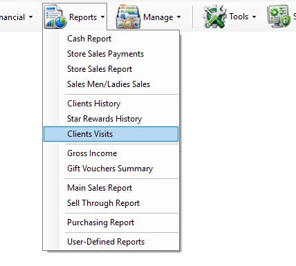
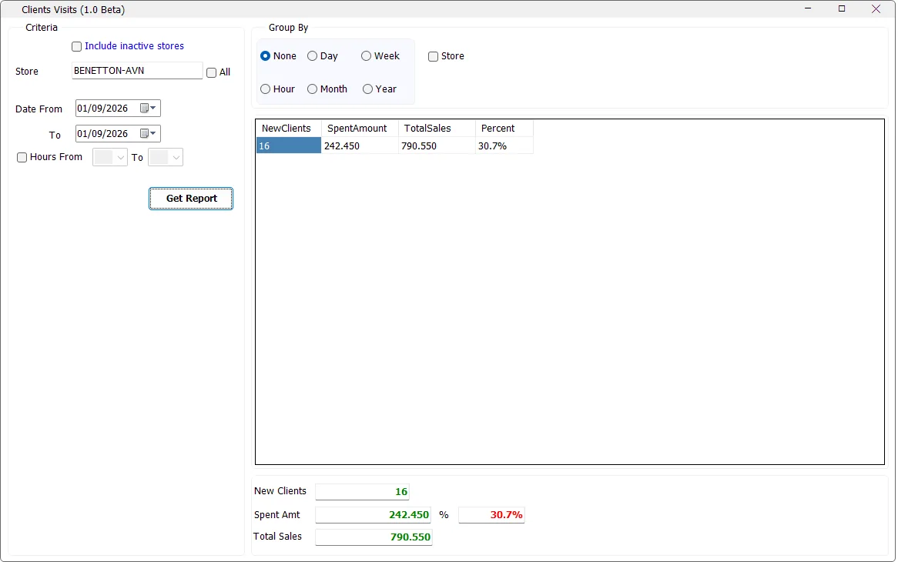

Acquisition
How many new clients?
Use Group By → None for a consolidated count over the selected period.
Clients Visits measures newly identified customer visits and the sales generated by those customers. It compares their spending with total cash sales for the selected stores and can summarize the result by store, day, week, month, year or hour.

IMS identifies new-client activity from cash-sale records that do not have a linked customer master record but do contain a usable telephone number. The report looks at the first qualifying transaction date for that telephone number at the store and checks whether it falls inside the selected reporting period.

Some IMS criteria fields open a compact multi-selection list instead of a normal drop-down. You can select several values without holding Ctrl.
| Field display | Meaning |
|---|---|
| All | All available values are included. If no individual item remains selected, IMS automatically returns the field to All. |
| One name | Exactly one value is selected. |
| Multi Selected | Two or more values are selected. |
| Criteria | What it does |
|---|---|
| Store | Selects one or more stores. The field opens the standard IMS multi-selection list. |
| All | Selects all stores available to the logged-in user. |
| Include inactive stores | Loads inactive stores into the selection list. This option is visible only to users with access to all departments. |
| Date From / To | Defines the reporting period. |
| Hours From / To | The Beta screen includes an hour-range selector; see the Beta note below before relying on it as a filter. |
If the user has access to only one store, IMS selects it automatically and disables the All and multi-store controls. With multiple available stores, click the Store field to choose the required locations.
| Option | Result |
|---|---|
| None | One consolidated result for the selected stores and date range. |
| Day | Groups by transaction date. |
| Week | Groups by calendar year and week. |
| Month | Groups by month and year. |
| Year | Groups by year. |
| Hour | Groups by transaction hour. |
| Store | Adds a Store column when multiple stores are selected. |
| Column | Meaning |
|---|---|
| Day / Week / Month / Year / Hour | Displayed when the corresponding period grouping is selected. |
| Store | Displayed when Store grouping is selected and more than one store is included. |
| NewClients | Distinct qualifying customer telephone numbers whose first matching visit falls within the selected period. |
| SpentAmount | Net cash-sales amount generated by the identified new clients. Cash returns reduce this amount. |
| TotalSales | Total net cash sales for the same selected store(s) and period. |
| Percent | SpentAmount ÷ TotalSales. |
The report uses Cash Sales and Cash Returns only: IMS transaction codes 51 and 53. Code 53 returns are treated as negative amounts in both new-client spending and total store sales.
| Measure | IMS calculation |
|---|---|
| New Clients | Count of distinct qualifying telephone numbers whose first matching store transaction falls in the selected period. |
| Spent Amount | Qualifying clients' cash sales less cash returns. |
| Total Sales | All selected-store cash sales less cash returns for the same period. |
| Percent | Spent Amount ÷ Total Sales. |
The Beta source requires the normal customer ID to be absent or zero and requires a telephone number that is neither blank nor the placeholder 000. The first qualifying transaction is evaluated by store and telephone number.
The bottom panel shows New Clients, Spent Amt, Total Sales and the overall percentage. The overall percentage is calculated from the totals, not by averaging the row percentages.
Clients Visits 1.0 Beta does not currently provide the standard IMS Export To Excel, Send By Email, Save As, or print toolbar. The result is viewed directly in the grid.
Clients Visits uses the same Reports-menu permission as Clients History. If the menu item is not visible, the logged-in user's IMS policy does not grant access to client-history reporting.
Use Group By → None for a consolidated count over the selected period.
Compare Spent Amount with Total Sales and review Percent.
Use Day, Week, Month or Year grouping.
Select multiple stores and enable Group By → Store.